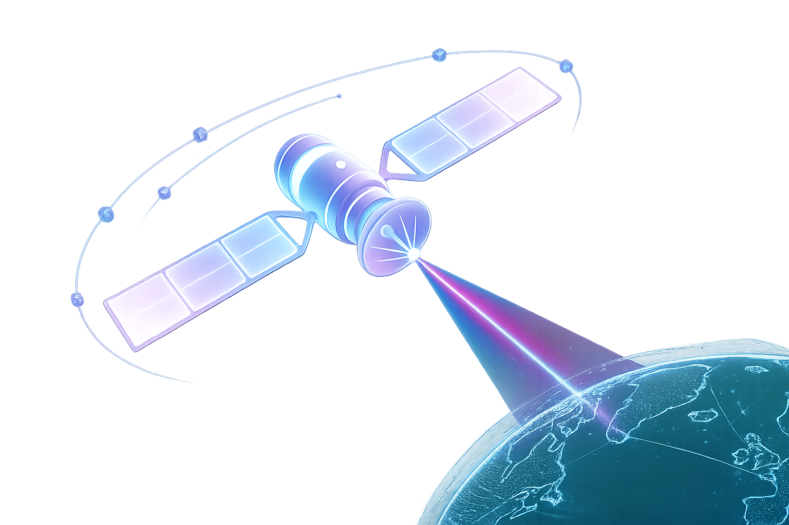
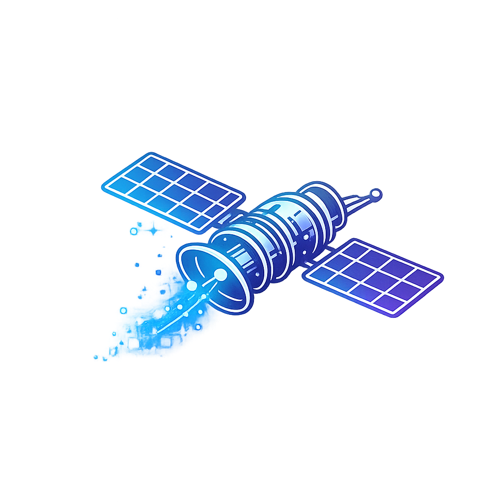
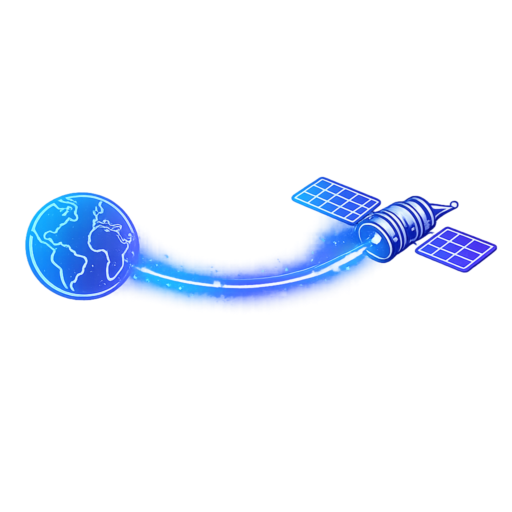

Onde a inovação e a exploração espacial se encontram
Conectando agências, cientistas e entusiastas para expandir as fronteiras do conhecimento cósmico global.
O Problema
O isolamento em missões espaciais dificulta a comunicação em tempo real, atrasando descobertas científicas cruciais para a humanidade.
Sistemas antigos e fragmentados limitam a colaboração global entre agências, empresas privadas e pesquisadores do cosmos.
Tecnologia
Utilizamos redes descentralizadas e inteligência artificial avançada para processar dados espaciais complexos com máxima segurança.
Nossa infraestrutura conta com comunicação a laser via satélite, garantindo transmissões ultra rápidas em órbitas profundas.

Objetivos

Otimizar Dados
Acelerar a transferência de informações científicas coletadas no espaço profundo.

Conectar Equipes
Unificar a comunicação entre astronautas e centros de comando na Terra.
Democratizar o Acesso
Disponibilizar dados astronômicos de forma pública para incentivar novas descobertas.
Público-alvo
Nossa plataforma atende astronautas em órbita, engenheiros de software aeroespacial e cientistas que analisam dados cósmicos.
Também impactamos estudantes e universidades apaixonados por astronomia, promovendo inclusão e fornecendo acesso à informação espacial.
Benefícios
Garantimos redução drástica nos custos operacionais de missões e aumento de velocidade na transmissão de arquivos.
Proporcionamos maior segurança contra falhas de conexão e um ambiente colaborativo global totalmente integrado.